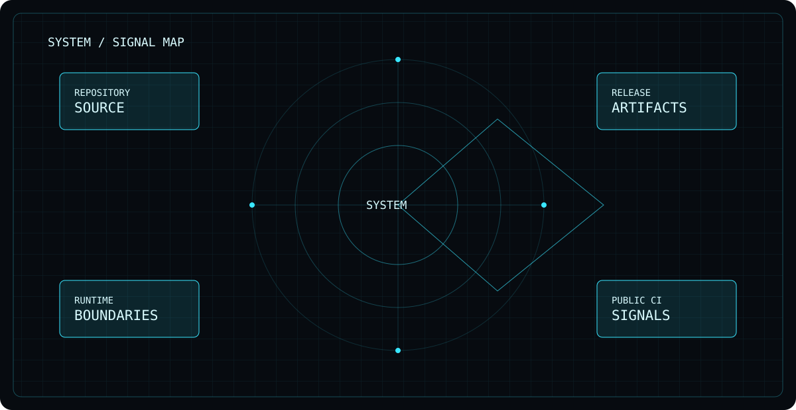

VoidOne / Main
Public project activity.
STARS—GitHub
OPEN ISSUES—GitHub
CICHECKINGLoading…
Live public signals from the repository and release infrastructure. No fake uptime numbers.

Public project activity.
The repository and automation remain the source of truth.